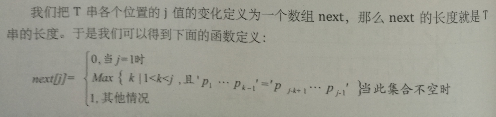

KMP匹配算法
用于数据的模式化匹配算法,称之为克努特-莫里斯-普拉特算法,简称为KMP算法

在数据匹配之前,先对自身数据进行重复划分.确定数据自身的重复位置,便于对数据进行匹配
基本伪代码12345678910111213141516public int[] getKMP(String str) { int i = 0; int j = -1; int[] kmp = new int[str.length()]; kmp[0] = -1; while (i < str.length()-1) { if (j == -1 || str.substring(i, i+1).equals(str.substring(j, j + 1)) ) { ++i; ++j; kmp[i] = j; } else { j = kmp[j]; } } return kmp;}
未理解点 j = kmp[j] ,为什么不是j–,尽管这样效率更高,但是只知道这样可行,还为理解为什么这样可行.
理解思路：因为如果是j– 那就意味着最后一位要与之前一位相同,例如abcabcdb,当判断到d的时候j=3 这时候j–毫无意义,因为之前的不可能相同,所以这时候采用了kmp[j],拿到前面的重复指数,然后在进行对比.
- 前面的可以理解,但是下面的kmp[j],真是思考了很久.